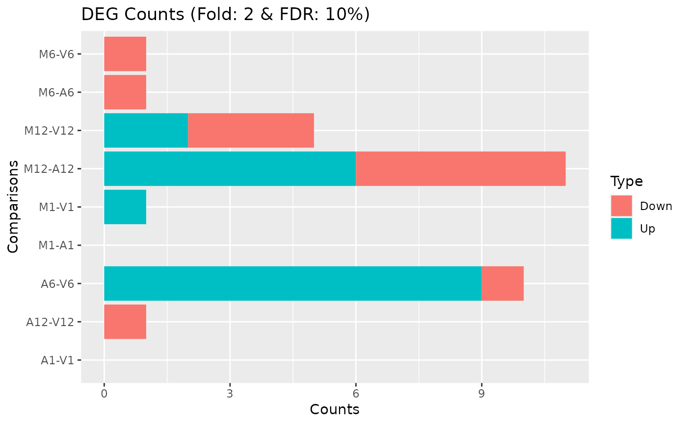

run_DESeq2.RdConvenience wrapper function to identify differentially expressed genes
(DEGs) in batch mode with DESeq2 for any number of pairwise sample
comparisons specified under the cmp argument. Users are strongly
encouraged to consult the DESeq2 vignette for more detailed information
on this topic and how to properly run DESeq2 on data sets with more
complex experimental designs.
run_DESeq2(countDF, targets, cmp, independent = FALSE, lfcShrink=FALSE, type="normal")
| countDF |
|
|---|---|
| targets | targets |
| cmp |
|
| independent | If |
| lfcShrink | logiacal. If |
| type | please check |
data.frame containing DESeq2 results from all comparisons. Comparison labels are appended to column titles for tracking.
Please properly cite the DESeq2 papers when using this function:
http://www.bioconductor.org/packages/devel/bioc/html/DESeq2.html
Thomas Girke
run_edgeR, readComp and DESeq2 vignette
targetspath <- system.file("extdata", "targets.txt", package="systemPipeR") targets <- read.delim(targetspath, comment.char = "#") cmp <- readComp(file=targetspath, format="matrix", delim="-") countfile <- system.file("extdata", "countDFeByg.xls", package="systemPipeR") countDF <- read.delim(countfile, row.names=1) degseqDF <- run_DESeq2(countDF=countDF, targets=targets, cmp=cmp[[1]], independent=FALSE)#>#> Warning: some variables in design formula are characters, converting to factorspval <- degseqDF[, grep("_FDR$", colnames(degseqDF)), drop=FALSE] fold <- degseqDF[, grep("_logFC$", colnames(degseqDF)), drop=FALSE] DEG_list <- filterDEGs(degDF=degseqDF, filter=c(Fold=2, FDR=10))#> [1] "UporDown" "Up" "Down" "Summary"DEG_list$Summary#> Comparisons Counts_Up_or_Down Counts_Up Counts_Down #> M1-A1 M1-A1 0 0 0 #> M1-V1 M1-V1 1 1 0 #> A1-V1 A1-V1 0 0 0 #> M6-A6 M6-A6 1 0 1 #> M6-V6 M6-V6 1 0 1 #> A6-V6 A6-V6 10 9 1 #> M12-A12 M12-A12 11 6 5 #> M12-V12 M12-V12 5 2 3 #> A12-V12 A12-V12 1 0 1